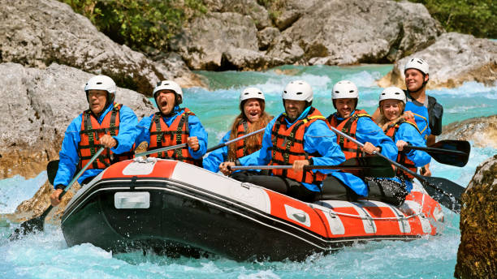
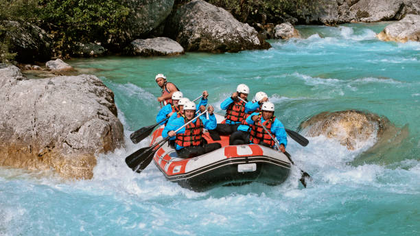
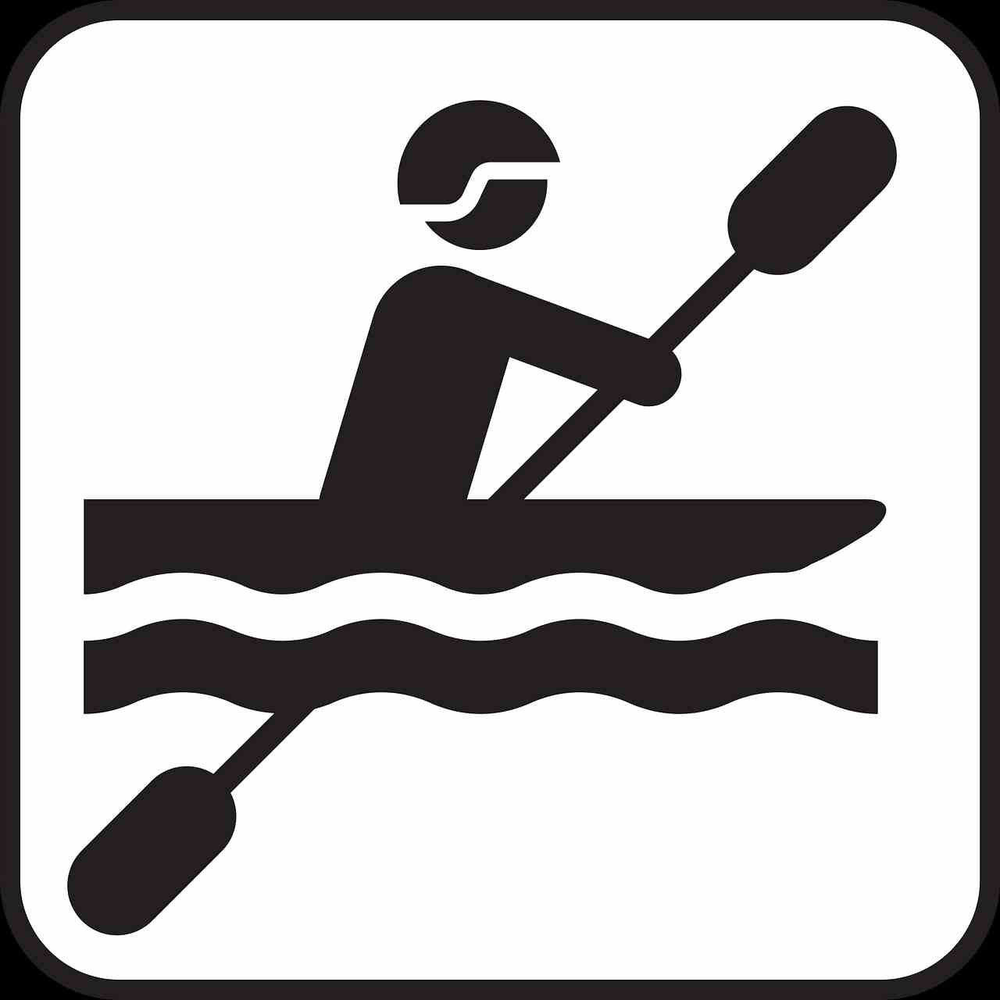

Our mission is to provide unforgettable white water rafting experiences while promoting safety, environmental awareness, and team building. We believe in the power of nature to transform lives.


Rapid Adventures
History
Founded in 1995 by outdoor enthusiasts Mark and Sarah Johnson, Rapid Adventures began as a small family operation with just two rafts. Over the years, we've grown into one of the premier rafting companies in the region, serving thousands of adventurers annually. Our commitment to safety and environmental stewardship has earned us numerous awards and recognition in the outdoor industry.
